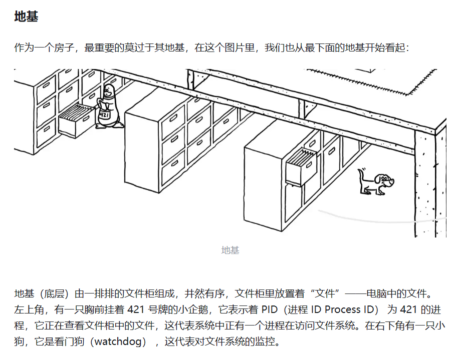

第8章 内存条中的秘密一、进程管理0、内存中的进程1、进程和程序的区别2、进程的分类3、查看内存中进程ps top htop3、/proc目录4、进程的优先级5、结束一个进程6、进程前后台控制7、图形界面进程管理二、计划任务1、周期性任务2、一次性任务3、黑客喜欢的命令/bin/at4、anacron5、计划任务总结6、system-timers定时器，精确计划任务三、Linux启动过程详解1、BIOS和CMOS2、BIOS硬件自检3、设置启动顺序4、MBR引导5、第三阶段：硬盘启动6、第四阶段：控制权交给了启动管理器（例如GRUB2）7、第四阶段：加载操作系统8、加载操作系统内核9、把父爱刻进Linux内核代码里10、systemd所有进程的父进程11、systemd引导整个内核的启动12、用户登录四、漫画Linux内核进程1、Linux地基2、Linux一层3、Linux跃层五、系统管理工具1、cockpit管理工具2、webmin管理工具3、内网穿透cpolar1、首先在官网注册一个账户2、启动cpolar服务3、进入Linux浏览器，https://127.0.0.1:92004、防火墙放开端口5、登录cpolar官网，输入用户名和密码登录6、利用上图中URL即可在外网访问Linux系统。7、卸载cpolar
第8章 内存条中的秘密
一、进程管理
0、内存中的进程


1# 想要读取一个文件，看看计算机在干啥？


- Linux是一个多任务的操作系统，系统上可以同时运行多个进程。进程运行在内存中，而程序存在于硬盘上。
1、进程和程序的区别

2、进程的分类


xxxxxxxxxx191[root@localhost ~]# pstree -p2systemd(1)─┬─ModemManager(950)─┬─{ModemManager}(953)3 │ ├─{ModemManager}(954)4 │ └─{ModemManager}(957)5 ├─NetworkManager(1019)─┬─{NetworkManager}(1022)6 │ └─{NetworkManager}(1023)7 ├─VGAuthService(920)8 ├─accounts-daemon(906)─┬─{accounts-daemon}(918)9 │ ├─{accounts-daemon}(919)10 │ └─{accounts-daemon}(927)11 ├─atd(1352)12 ├─auditd(871)─┬─sedispatch(873)13 │ ├─{auditd}(872)14 │ └─{auditd}(874)15 ├─avahi-daemon(898)───avahi-daemon(924)16 ├─chronyd(923)17 ├─colord(2156)─┬─{colord}(2161)18 │ ├─{colord}(2162)19 │ └─{colord}(2164)3、查看内存中进程ps top htop
xxxxxxxxxx51[root@bogon ~]# ps -e2#显示所有用户的所有终端的所有进程3[root@bogon ~]# ps -aux4[root@bogon ~]# ps -u root5[root@bogon ~]# ps -p 1xxxxxxxxxx121ps -aux 显示格式的说明：2USER：进程的拥有者； 3PID：进程ID； 4%CPU：占用CPU的百分比； 5%MEM：占用内存的百分比； 6VSZ：占用虚拟内存的百分比；7RSS：占用物理内存的大小（bytes）； 8TTY：若为tty1-tty6则为本机用户，若为pts/?则为远程用户执行的程序；9STAT：进程的状态，进程状态解释参考本章前面的内容；10START：进程开始运行时间； 11TIME：进程运行了多久；12COMMAND：进程的名称。
x1#上半部分说明，共分5行：2第一行：分别表示系统运行的时间、用户的数量及系统的负载。其中系统的负载有三个数据，分别是1分钟、5分钟、10分钟的系统平均负载，如果值小于1，表明系统不忙碌。3第二行∶总的进程数，并分别说明进程的状态，比如有1个正在运行，302个处于阻塞状态，其中zombie表示疆尸进程。4第三行∶CPU的整体负载。us表示用户空间占用CPU百分比；sy表示内核空间占用CPU百分比；ni表示用户进程空间内改变过优先级的进程占用CPU百分比；id表示空闲CPU百分比；wa等待输入的进程占用CPU的百分比；hi硬中断占用CPU百分比；si软中段占用CPU百分比；st虚拟CPU等待实际CPU的时间的百分比。5第四行：物理内存的使用情况。6第五行∶虚拟内存（Swap）的使用情况。7
8#下半部分说明：9PID：进程ID。10USER：进程的拥有者。11PR∶进程的优先级，越小越早被执行； 12NI∶nice值，与PR共同构成进程的优先级，值越小进程的优先级越高。13VIRT：进程使用的虚拟内存总量。14RES：进程使用的物理内存大小。15SHR：共享内存大小。16S：进程的状态。17%CPU∶CPU的占用的百分比； 18%MEM∶内存占用的百分比19TIME+：进程使用的CPU时间总计。单位是1/100秒。20COMMAND：进程名称。 3、/proc目录

4、进程的优先级
进程的优先级
如下所示：PRI表示老的优先级，调整进程优先级用NI的值，最终优先级=PRI+NI #NI的取值范围[-20，19]，所以优先级的范围是[60，99]
xxxxxxxxxx91#每次调整都是从80开始的。2[root@localhost ~]# ps -l 39653F S UID PID PPID C PRI NI ADDR SZ WCHAN TTY TIME CMD45 S 0 3965 3933 0 79 -1 - 5350 do_sel ? 0:02 sshd: root@pts/05[root@localhost ~]# renice +2 396563965 (process ID) 旧优先级为 -1，新优先级为 27[root@localhost ~]# ps -l 39658F S UID PID PPID C PRI NI ADDR SZ WCHAN TTY TIME CMD95 S 0 3965 3933 0 82 2 - 5350 do_sel ? 0:02 sshd: root@pts/05、结束一个进程
xxxxxxxxxx11[root@bogon ~]# kill -9 244116、进程前后台控制
xxxxxxxxxx121# &把一个进程放入后台 2# fg把一个进程从后台调度到前台3[root@localhost ~]# vi test.sh &4[1] 723935#查看后台有几项工作6[root@localhost ~]# jobs7[1]+ 已停止 vi test.sh8[root@localhost ~]# fg 19vi test.sh10#按下按下[Ctrl]加上z键，把该项工作放在后台11[root@localhost ~]# jobs12[1]+ 已停止 vi test.sh7、图形界面进程管理
系统监视器的使用介绍：（1）找到活动->应用程序->活动监视器。
第一个选项卡是有关进程管理的界面，每一行显示一个进程的相关信息，包括进程名、用户、占用CPU、占用内存、优先级等各种详细信息。


二、计划任务
1、周期性任务
xxxxxxxxxx11[root@bogon ~]# systemctl status crond.service- /etc/crontab文件是crond服务的配置文件。改文件如下图所示，其详细格式见课本p176。
- 第一种方法：直接修改/etc/crontab文件
xxxxxxxxxx201[root@bogon ~]# cat /etc/crontab2SHELL=/bin/bash3PATH=/sbin:/bin:/usr/sbin:/usr/bin4MAILTO=root5
6# For details see man 4 crontabs7
8# Example of job definition:9# .---------------- minute (0 - 59)10# | .------------- hour (0 - 23)11# | | .---------- day of month (1 - 31)12# | | | .------- month (1 - 12) OR jan,feb,mar,apr ...13# | | | | .---- day of week (0 - 6) (Sunday=0 or 7) OR sun,mon,tue,wed,thu,fri,sat14# | | | | |15# * * * * * user-name command to be executed16
1745 4 1，10，22 * * root /root/backup.sh18//在每月的1，10，22日4:45执行/root/backup.sh19
2030 21 * * * root /root/backup.sh第二种方法：在/etc/cron.d目录内创建文件来实现。其配置语法格式与/etc/crontab文件完全相同。
xxxxxxxxxx81[root@bogon ~]# ls /etc/cron.d20hourly raid-check sysstat3[root@bogon ~]# cat /etc/cron.d/sysstat4# Run system activity accounting tool every 10 minutes5*/10 * * * * root /usr/lib64/sa/sa1 1 16# 0 * * * * root /usr/lib64/sa/sa1 600 6 &7# Generate a daily summary of process accounting at 23:53853 23 * * * root /usr/lib64/sa/sa2 -A第三种情况：root以外的用户可以使用crontab命令配置cron任务。以普通用户自己配置自己的任务计划。
xxxxxxxxxx91[root@bogon ~]# su lsr2[lsr@bogon root]$ crontab -e3no crontab for lsr - using an empty one4crontab: installing new crontab5[lsr@bogon root]$ crontab -l640 * * * * touch /home/lsr/tt7[lsr@bogon root]$ crontab -r8[lsr@bogon root]$ crontab -l9no crontab for lsr任务安排的格式：
周期性任务安排举例说明：
xxxxxxxxxx101#每天早上6点，执行命令20 6 * * * echo "morning" >> /dev/null 3#每隔两个小时，执行命令40 */2 * * * echo "Hello" >> /tmp/test.txt5#每个月的4号和每周的周一到周三的11点60 11 4 * 1-3 echo `date`>/tmp/date.txt 7#在每周一，三，五的下午3：00系统重新启动800 15 * * 1，3，5 shutdown -r +109每天8点30分执行如下所示的两个指令（每个指令以;分隔） 1030 8 * * * （ls -a;pwd）2、一次性任务
xxxxxxxxxx101#确认atd服务启动2[lsr@bogon root]$ systemctl status atd.service3● atd.service - Job spooling tools4 Loaded: loaded (/usr/lib/systemd/system/atd.service; enabled; vendor preset: enabled)5 Active: active (running) since 一 2022-10-24 04:55:28 CST; 4h 31min left6 Main PID: 1370 (atd)7 CGroup: /system.slice/atd.service8 └─1370 /usr/sbin/atd -f9
1010月 24 04:55:28 bogon systemd[1]: Started Job spooling tools.举例：新建一个文件exat.sh 改文件具体内容如图所示。修改其为可执行权限。
使用at -f exat.sh now+1 minutes命令来安排一次性任务。
xxxxxxxxxx211#安排在某个时间执行某个Shell程序举例2[root@bogon ~]# touch exat.sh3[root@bogon ~]# ls4abc exat.sh 公共 图片 音乐5abc.tar initial-setup-ks.cfg 模板 文档 桌面6anaconda-ks.cfg linuxqq_2.0.0-b2-1089_aarch64.rpm 视频 下载7[root@bogon ~]# chmod 777 exat.sh8[root@bogon ~]# vi exat.sh9[root@bogon ~]# cat exat.sh 10echo `date`>>result.txt12[root@bogon ~]# at -f exat.sh now+1 minutes13job 2 at Mon Oct 24 00:33:00 202214[root@bogon ~]# atq152 Mon Oct 24 00:33:00 2022 a root16[root@bogon ~]# ls17abc exat.sh result.txt 视频 下载18abc.tar initial-setup-ks.cfg 公共 图片 音乐19anaconda-ks.cfg linuxqq_2.0.0-b2-1089_aarch64.rpm 模板 文档 桌面20[root@bogon ~]# cat result.txt 212022年 10月 24日 星期一 00:33:00 CST直接利用at命令来安排任务，以ctrl+D结束命令。
xxxxxxxxxx181#使用at命令直接安排任务举例2[root@bogon ~]# date32022年 10月 24日 星期一 00:39:15 CST4[root@bogon ~]# at now +2 minutes5at> echo `date` >> result1.txt6at> <EOT>7job 3 at Mon Oct 24 00:41:00 20228[root@bogon ~]# date92022年 10月 24日 星期一 00:40:16 CST10
11#间隔两分钟后，查看result1.txt文件生成。12[root@bogon ~]# ls13abc initial-setup-ks.cfg 公共 文档14abc.tar linuxqq_2.0.0-b2-1089_aarch64.rpm 模板 下载15anaconda-ks.cfg result1.txt 视频 音乐16exat.sh result.txt 图片 桌面17[root@bogon ~]# cat result1.txt182022年 10月 24日 星期一 00:41:00 CST
xxxxxxxxxx161#安排在明天下午18：00执行某项任务2[root@bogon ~]# at 18:00 tomorrow 3at> date4at> <EOT>5job 4 at Tue Oct 25 18:00:00 20226[root@bogon ~]# atq74 Tue Oct 25 18:00:00 2022 a root8
9#指定在具体日期执行某件事情，可以具体到分钟10[root@localhost ~]# at 24:00 2023-12-2011warning: commands will be executed using /bin/sh12at> /bin/sync13at> <EOT>14job 1 at Thu Dec 21 00:00:00 202315[root@localhost ~]# atq161 Thu Dec 21 00:00:00 2023 a root3、黑客喜欢的命令/bin/at
该命令的权限如下，可以看到该命令具有SUID权限。
xxxxxxxxxx21[root@localhost ~]# ls -l /bin/at2-rwsr-xr-x. 1 root root 70056 10月 14 2022 /bin/at
那么如何解决该问题呢？
为了解决上述安全隐患，Linux提供了一种安全机制来对at命令的使用进行限制，利用/etc/at.allow 与 /etc/at.deny 这两个文件来决定哪些用户可以使用。
当有用户使用at命令的时候，系统会按照如下的规则来进行控制：

同样的道理，/bin/crontab命令也具有SUID的特殊权限，所以也存在同样的安全问题。解决方法也和上面的命令类似。
xxxxxxxxxx21[root@localhost ~]# ls -l /bin/crontab2-rwsr-xr-x. 1 root root 69832 10月 14 2022 /bin/crontab与at命令类似，Linux操纵系统使用/etc/cron.allow和/etc/cron.deny两个文件来限制用户的权限。默认情况下系统只有/etc/cron.deny文件。

4、anacron
xxxxxxxxxx351#如果Linux系统不是24小时开机的，比如有些服务器晚上或者周末关机，那么就会出现一种情况，设置的周期性的计划任务刚好处在关机的时间段内，那么这些定时任务就不会得到执行。比如定时每周六24:00进行系统备份，但是公司为了节约用电，周末无人加班的情况下，关掉Linux服务器，周一再开启Linux系统。那么这个任务就无法执行了。如果不想错过这样的任务，anacron就是解决这样的问题的。2#anacron以一天、一周和一月为检测周期，检测是否有定时任务因为关机的原因没有被执行，如果有这样的任务，anacron会再特定的时间重新执行这些定时任务。anacron是以天为单位进行周期性的检测，而crond是以分钟为单位进行检测。3
4[root@localhost ~]# ll /var/spool/anacron/5总用量 126-rw-------. 1 root root 9 11月 6 10:50 cron.daily7-rw-------. 1 root root 9 10月 30 07:42 cron.monthly8-rw-------. 1 root root 9 11月 5 11:14 cron.weekly9[root@localhost ~]# cat /var/spool/anacron/cron.daily102023110611[root@localhost ~]# cat /var/spool/anacron/cron.monthly122023102913[root@localhost ~]# cat /var/spool/anacron/cron.weekly142023110515#在/var/spool/anacron目录中，有cron.daily，cron.monthly，cron.weekly三个文件，这三个文件的内容如上所示，保存的是一个日期，该日期表示的是上一次运行anacron的时间。anacron每天会读取这些时间，和当前的系统时间进行比较，如果两者的时间差值超过了anacron配置文件中指定的时间差值，就说明有定时任务漏掉了没有被执行，这时anacron就会执行这些漏掉的定时任务。16
17#anacron配置文件的指定时间差值如下所示：18[root@localhost ~]# cat /etc/anacrontab19...20# the maximal random delay added to the base delay of the jobs21RANDOM_DELAY=4522# the jobs will be started during the following hours only23START_HOURS_RANGE=3-2224#period in days delay in minutes job-identifier command251 5 cron.daily nice run-parts /etc/cron.daily267 25 cron.weekly nice run-parts /etc/cron.weekly27@monthly 45 cron.monthly nice run-parts /etc/cron.monthly28#这里的第一列数据中的1、7和@monthly（30），就是指定的时间差值。29#以第一行为例，加以说明：301表示如果差值为1天315延迟5分钟的时长32cron.daily 任务的唯一标识33nice run-parts /etc/cron.daily 以默认的优先级运行/etc/cron.daily目录下的定时任务34#那么第一行的含义就是如果时间差值超过1天，先强制延迟5分钟后，再随机延迟一段时间（0-45分钟以内），时间必须在规定时间段（3:00-22:00）内，然后以默认的优先级运行/etc/cron.daily目录下的定时任务。35#也就是说，只要把每天、每周和每月需要定时执行的任务分别放置在/etc/cron.daily、/etc/cron.weekly、/etc/cron.monthly三个目录下，系统就会自动每天、每周和每月自动执行这任务，从而帮助用户自动化完成很多周期性工作任务，大大便利了Linux系统管理和维护。5、计划任务总结
Linux系统中三种计划任务的总结如下：
（1）atd是以分钟为周期，定时扫描/var/spool/at目录，看看有没有任务要执行；
xxxxxxxxxx21[root@localhost ~]# ls /var/spool/at2a0000101b11e20 spool（2）crond也是以分钟周期，每分钟都要扫描一下/etc/cron.d目录，/var/spool/cron目录，以及/etc/crontab文件中有没有要执行的任务；
xxxxxxxxxx31[root@localhost ~]# ls /etc/cron.d20hourly3[root@localhost ~]# ls /var/spool/cron/（3）通过每分钟扫描/etc/cron.d/0hourly文件
xxxxxxxxxx41[root@localhost ~]# cat /etc/cron.d/0hourly2# Run the hourly jobs3
401 * * * * root run-parts /etc/cron.hourly从这里可以看到每个小时会执行一次/etc/cron.hourly目录下的文件。
可执行文件0anacron位于/etc/cron.hourly目录下：
xxxxxxxxxx21[root@localhost ~]# ls /etc/cron.hourly/0anacron2/etc/cron.hourly/0anacron所以anacron会每小时执行一次。
（4）anacron每个小时会扫描一次/etc/anacrontab文件，
xxxxxxxxxx111[root@localhost ~]# cat /etc/anacrontab2
3# the maximal random delay added to the base delay of the jobs4RANDOM_DELAY=455# the jobs will be started during the following hours only6START_HOURS_RANGE=3-227
8#period in days delay in minutes job-identifier command91 5 cron.daily nice run-parts /etc/cron.daily107 25 cron.weekly nice run-parts /etc/cron.weekly11@monthly 45 cron.monthly nice run-parts /etc/cron.monthly通过计算差值，其差值与1、7及@monthly比较，从而实现定期执行每天、每周和每月定时任务的目的。

上图中的atd和crond都是系统服务，而anacron是系统命令，其中atd和crond服务是系统开机启动的过程中就会被默认启动，而anacron命令是每隔小时被调用一次。从而完成了系统中所有一次性计划任务（atd）和周期性的计划任务(crond)。使用anacron的主要目的是可以让那些因关机而漏掉的计划任务得到执行。
6、system-timers定时器，精确计划任务
本例题首先创建了一个任务ping1.sh。然后创建了一个ping1.service指定要执行的任务，最后创建了一个定时器unit，安排具体什么时候执行任务。通过这种方式，就可以使用systemctl 命令，像调度其他服务一样启动和管理该定时器。具有一定参考意义。
ping1.service和ping1.timer在/usr/lib/systemd/system/目录下：
点击下面文件名可以查看文件内容
ping1.sh在/root/temp/目录下
xxxxxxxxxx701# systemd 通过一个timer单元来创建一个定时任务。首先定义个service单元，这个service单元定义了我们2# 想要定时执行的任务。然后再定一个一个timer单元。通过这个timer单元去定义定时规则去执行前面的service单元。3
4# 第一步：定义一个将要执行的任务脚本。名字为ping1.sh5[root@localhost system]# cd /root/temp/6[root@localhost temp]# cat ping1.sh7ping -c1 192.168.14.1 &> /root/temp/1.log9#给脚本赋予可执行权限10[root@localhost temp]# chmod 777 /root/temp/ping1.sh11
12# 第二步：创建一个service单元：ping1.service13[root@localhost temp]# cd /usr/lib/systemd/system14[root@localhost system]# cat ping1.service15[Unit]16Description= ping 117
18[Service]19Type=simple20ExecStart=/root/temp/ping1.sh21
22[Install]23WantedBy=multi-user.target24
25# 创建一个timer单元：ping1.timer26[root@localhost system]# cd /usr/lib/systemd/system27# 定时任务启动后60秒开始执行，然后每隔30秒执行一次任务。28[root@localhost system]# cat ping1.timer29[Unit]30Description=ping 1 every 30s31
32[Timer]33OnActiveSec=6034OnUnitActiveSec=3035Unit=ping1.service36
37[Install]38WantedBy=multi-user.target39
40[root@localhost system]# systemctl daemon-reload #重新加载配置文件41[root@localhost system]# systemctl start ping1.timer #启动定时器42[root@localhost system]# systemctl status ping1.timer #查看定时器的状态43● ping1.timer - ping 1 every 30s44 Loaded: loaded (/usr/lib/systemd/system/ping1.timer; enabled; preset: disabled)45 Active: active (waiting) since Sat 2024-04-06 17:26:56 CST; 12s ago46 Until: Sat 2024-04-06 17:26:56 CST; 12s ago47 Trigger: Sat 2024-04-06 17:27:26 CST; 17s left48 Triggers: ● ping1.service49
504月 06 17:26:56 localhost.localdomain systemd[1]: Started ping 1 every 30s.51
52# 对该服务是否真正执行进行验证。53# 查看/root/temp/1.log文件，可以看到该脚本已经运行了，其结果如下所示：54[root@localhost system]# cat /root/temp/1.log55PING 192.168.14.1 (192.168.14.1) 56(84) 比特的数据。5664 比特，来自 192.168.14.1: icmp_seq=1 ttl=64 时间=0.489 毫秒57
58--- 192.168.14.1 ping 统计 ---59已发送 1 个包， 已接收 1 个包, 0% packet loss, time 0ms60rtt min/avg/max/mdev = 0.489/0.489/0.489/0.000 ms61[root@localhost system]# cat /root/temp/1.log62PING 192.168.14.1 (192.168.14.1) 56(84) 比特的数据。6364 比特，来自 192.168.14.1: icmp_seq=1 ttl=64 时间=0.280 毫秒64
65--- 192.168.14.1 ping 统计 ---66已发送 1 个包， 已接收 1 个包, 0% packet loss, time 0ms67rtt min/avg/max/mdev = 0.280/0.280/0.280/0.000 ms68
69# 通过上述的示例，可以自己定义定时器unit，指定其运行时间。从而实现了系统的计划任务安排。70
小结 本节主要内容： 周期性任务安排和一次性任务安排。
（1）周期性任务计划：crond.service
(2) 一次性任务计划：atd.service
（3）anacron:关机后的计划任务如何执行
（4）system-timer:定时器安排计划任务
三、Linux启动过程详解


详细介绍参考菜鸟教程
1、BIOS和CMOS
BIOS存储的是设置程序，CMOS里面存储的是参数。
这块芯片里的程序叫做"基本输入输出系统"（Basic Input/Output System），简称为BIOS。


2、BIOS硬件自检
BIOS程序首先检查，计算机硬件能否满足运行的基本条件，这叫做"硬件自检"（Power-On Self-Test），缩写为POST。如果硬件出现问题，主板会发出不同含义的蜂鸣，启动中止。如果没有问题，屏幕就会显示出CPU、内存、硬盘等信息。

3、设置启动顺序
硬件自检完成后，BIOS把控制权转交给下一阶段的启动程序。
这时，BIOS需要知道，"下一阶段的启动程序"具体存放在哪一个设备。也就是说，BIOS需要有一个外部储存设备的排序，排在前面的设备就是优先转交控制权的设备。这种排序叫做"启动顺序"（Boot Sequence）。
打开BIOS的操作界面，里面有一项就是"设定启动顺序"。

第二是找到硬件的一个起点，也就是找到引导设备，也就是说如果操作系统在硬盘上，就把硬盘作为第一个启动设备。BIOS里面可以设置开机的引导顺序。
第二阶段：主引导记录
BIOS按照"启动顺序"，把控制权转交给排在第一位的储存设备。
这时，计算机读取该设备的第一个扇区，也就是读取最前面的512个字节。如果这512个字节的最后两个字节是0x55和0xAA，表明这个设备可以用于启动；如果不是，表明设备不能用于启动，控制权于是被转交给"启动顺序"中的下一个设备。
这最前面的512个字节，就叫做"主引导记录"（Master boot record，缩写为MBR）。
4、MBR引导
"主引导记录"只有512个字节，放不了太多东西。它的主要作用是，告诉计算机到硬盘的哪一个位置去找操作系统。
硬盘分区有很多好处。考虑到每个区可以安装不同的操作系统，"主引导记录"因此必须知道将控制权转交给哪个区。

5、第三阶段：硬盘启动
这时，计算机的控制权就要转交给硬盘的某个分区了。
这里分为两种情况：
第一种：直接找到分区，比如这里的/dev/sda1分区是启动分区。然后加载操作系统到内存。
第二种：包控制权交给某个分区的启动管理器。（默认Linux就是这样。）
6、第四阶段：控制权交给了启动管理器（例如GRUB2）
在这种情况下，计算机读取"主引导记录"前面446字节的机器码之后，不再把控制权转交给某一个分区，而是运行事先安装的"启动管理器"（boot loader），由用户选择启动哪一个操作系统。
Linux环境中，目前最流行的启动管理器是Grub。
- GRUB引导加载程序介绍
grub的概念：当计算机要引导操作系统时，bios会读取MBR，MBR本身要包含两类内容：引导加载程序和分区表。
GRUB是Linux系统默认的引导加载程序。
GRUB能用于几乎所有的操作系统。
centos7采用GRUB2引导加载程序。
GRUB2的主配置文件
xxxxxxxxxx241[root@bogon ~]# cat /boot/efi/EFI/centos/grub.cfg2//该文件会按照顺序调用/boot/grub.d目录中的脚本来实现不同的功能。3
4[root@bogon ~]# ls -l /etc/grub.d5总用量 726-rwxr-xr-x. 1 root root 8702 7月 30 2020 00_header7-rwxr-xr-x. 1 root root 1043 3月 22 2019 00_tuned8-rwxr-xr-x. 1 root root 232 7月 30 2020 01_users9-rwxr-xr-x. 1 root root 10781 7月 30 2020 10_linux10-rwxr-xr-x. 1 root root 10275 7月 30 2020 20_linux_xen11-rwxr-xr-x. 1 root root 2559 7月 30 2020 20_ppc_terminfo12-rwxr-xr-x. 1 root root 11169 7月 30 2020 30_os-prober13-rwxr-xr-x. 1 root root 214 7月 30 2020 40_custom14-rwxr-xr-x. 1 root root 216 7月 30 2020 41_custom15-rw-r--r--. 1 root root 483 7月 30 2020 README16
17[root@bogon ~]# cat /etc/default/grub18GRUB_TIMEOUT=5 //默认启动项的时间 5秒19GRUB_DISTRIBUTOR="$(sed 's, release .*$,,g' /etc/system-release)"20GRUB_DEFAULT=saved21GRUB_DISABLE_SUBMENU=true 22GRUB_TERMINAL_OUTPUT="console" //选择终端输出设备23GRUB_CMDLINE_LINUX="crashkernel=auto rd.lvm.lv=cl_fedora/root rd.lvm.lv=cl_fedora/swap rhgb quiet"24GRUB_DISABLE_RECOVERY="true" //是否创建修复模式菜单grub2加密简介
- GRUB2作为系统中的第一道屏障的安全性非常重要，对其进行加密可以实现安全性。
- 支持两种加密格式：
- 明文密码：密码数据没有经过加密，安全性差。
- PBKDF2加密密码：存储的是加密后的密码，安全性高。
具体加密方法见课本185页和186页。GRUB2解锁方法见课本186页。
11.6 GRUB2配置案例
- 破解root用户密码
具体破解方法见课本P187-188。
- 修改网卡名称
具体修改方式见课本P88。
7、第四阶段：加载操作系统
控制权转交给操作系统后，操作系统的内核首先被载入内存。
以Linux系统为例，先载入/boot目录下面的kernel。内核加载成功后，第一个运行的程序是/sbin/init。它根据配置文件（Debian系统是/etc/initab）产生init进程。这是Linux启动后的第一个进程，pid进程编号为1，其他进程都是它的后代。然后，init线程加载系统的各个模块，比如窗口程序和网络程序，直至执行/bin/login程序，跳出登录界面，等待用户输入用户名和密码。
至此，全部启动过程完成。
8、加载操作系统内核
xxxxxxxxxx251#查看启动分区/boot2[root@localhost ~]# ls /boot3config-5.14.0-284.11.1.el9_2.aarch644config-5.14.0-284.30.1.el9_2.aarch645dtb6dtb-5.14.0-284.11.1.el9_2.aarch647dtb-5.14.0-284.30.1.el9_2.aarch648efi9#这是引导程序的grub2的配置文件10grub211initramfs-0-rescue-2718a270716541a98d2a6da774bbef78.img12#这里是一个虚拟的文件系统13initramfs-5.14.0-284.11.1.el9_2.aarch64.img14initramfs-5.14.0-284.11.1.el9_2.aarch64kdump.img15initramfs-5.14.0-284.30.1.el9_2.aarch64.img16initramfs-5.14.0-284.30.1.el9_2.aarch64kdump.img17loader18symvers-5.14.0-284.11.1.el9_2.aarch64.gz19symvers-5.14.0-284.30.1.el9_2.aarch64.gz20System.map-5.14.0-284.11.1.el9_2.aarch6421System.map-5.14.0-284.30.1.el9_2.aarch6422vmlinuz-0-rescue-2718a270716541a98d2a6da774bbef7823#这是Linux的内核24vmlinuz-5.14.0-284.11.1.el9_2.aarch6425vmlinuz-5.14.0-284.30.1.el9_2.aarch64vmlinuz-5.14.0-284.11.1.el9_2.aarch64
Linux内核，Linux之父将爱刻进Linux内核代码里
9、把父爱刻进Linux内核代码里
魔力数--父爱深沉

Linux内核主要使用C语言编写的，还有少量的汇编语言编写的代码。你可以从Linux官网自由下载免费使用。我们来看一段有意思的代码，这段代码在Linux重启代码reboot.h中，.h文件表示对函数或变量的声明。
Linux内核中重启代码的实现 reboot.h
Linux内核中重启变量的声明 reboot.c
特别说明：为了演示方便。
本系统中已将把linux-5.9.7.tar.xz内核下载至/root目录，并解压至/root/linux-5.9.7，
Linux-5.9.7一共有4723 directories, 69738 files
同时也已经把需要的文件linux-5.9.7/include/uapi/linux/reboot.h复制到/root/reboot.h
linux-5.9.7/kernel/reboot.c复制到/root/reboot.c
当然也可以按照如下所示的步骤自己来操作一遍。
带你一文看懂Linux内核！Linux内核架构和工作原理详解
最权威的Linux内核文档：The Linux Kernel documentation — The Linux Kernel documentation
注：该图片来源于：Linux kernel diagram (makelinux.github.io) 该图是利用Linux源代码生成的，通过该网站，该图可以点击每一个节点查看每一个节点的详情。👍👍👍
xxxxxxxxxx1161#第一步：从官网下载一个内核来看看，下载快慢取决于你的网络速度，内核大小为110M左右。2[root@localhost ~]# curl --url https://cdn.kernel.org/pub/linux/kernel/v5.x/linux-5.9.7.tar.xz --output ./linux-5.9.7.tar.xz3
4#第二步：下载完成后，使用xz和tar命令解压缩内核5[root@localhost ~]# xz -cd linux-5.9.7.tar.xz |tar xvf -6
7#Linux-5.9.7一共有4723 directories, 69738 files8[root@localhost ~]# tree linux-5.9.7 9linux-5.9.710├── arch11│ ├── alpha12│ │ ├── boot13│ │ │ ├── bootloader.lds14│ │ │ ├── bootp.c15│ │ │ ├── bootpz.c16│ │ │ ├── head.S17│ │ │ ├── main.c18│ │ │ ├── Makefile19│ │ │ ├── misc.c20│ │ │ ├── stdio.c21│ │ │ └── tools22│ │ │ ├── mkbb.c23│ │ │ └── objstrip.c24 254723 directories, 69738 files26
27
28#第三步：查看reboot.h文件，使用grep过滤reboot.h中魔力数MAGIC变量值29[root@localhost ~]# cat linux-5.9.7/include/uapi/linux/reboot.h30/* SPDX-License-Identifier: GPL-2.0 WITH Linux-syscall-note */31#ifndef _UAPI_LINUX_REBOOT_H32#define _UAPI_LINUX_REBOOT_H33
34/*35 * Magic values required to use _reboot() system call.36 */37
38#define LINUX_REBOOT_MAGIC1 0xfee1dead39#define LINUX_REBOOT_MAGIC2 67227479340#define LINUX_REBOOT_MAGIC2A 8507227841#define LINUX_REBOOT_MAGIC2B 36936744842#define LINUX_REBOOT_MAGIC2C 53799321643
44
45/*46 * Commands accepted by the _reboot() system call.47 *48 * RESTART Restart system using default command and mode.49 * HALT Stop OS and give system control to ROM monitor, if any.50 * CAD_ON Ctrl-Alt-Del sequence causes RESTART command.51 * CAD_OFF Ctrl-Alt-Del sequence sends SIGINT to init task.52 * POWER_OFF Stop OS and remove all power from system, if possible.53 * RESTART2 Restart system using given command string.54 * SW_SUSPEND Suspend system using software suspend if compiled in.55 * KEXEC Restart system using a previously loaded Linux kernel56 */57
58#define LINUX_REBOOT_CMD_RESTART 0x0123456759#define LINUX_REBOOT_CMD_HALT 0xCDEF012360#define LINUX_REBOOT_CMD_CAD_ON 0x89ABCDEF61#define LINUX_REBOOT_CMD_CAD_OFF 0x0000000062#define LINUX_REBOOT_CMD_POWER_OFF 0x4321FEDC63#define LINUX_REBOOT_CMD_RESTART2 0xA1B2C3D464#define LINUX_REBOOT_CMD_SW_SUSPEND 0xD000FCE265#define LINUX_REBOOT_CMD_KEXEC 0x4558454366
67#查看reboot.c看如何使用这几个变量68[root@localhost ~]# cat linux-5.9.7/kernel/reboot.c69...省略70/*71 * Reboot system call: for obvious reasons only root may call it,72 * and even root needs to set up some magic numbers in the registers73 * so that some mistake won't make this reboot the whole machine.74 * You can also set the meaning of the ctrl-alt-del-key here.75 *76 * reboot doesn't sync: do that yourself before calling this.77 */78SYSCALL_DEFINE4(reboot, int, magic1, int, magic2, unsigned int, cmd,79 void __user *, arg)80{81 struct pid_namespace *pid_ns = task_active_pid_ns(current);82 char buffer[256];83 int ret = 0;84
85 /* We only trust the superuser with rebooting the system. */86 if (!ns_capable(pid_ns->user_ns, CAP_SYS_BOOT))87 return -EPERM;88
89 /* For safety, we require "magic" arguments. */90 if (magic1 != LINUX_REBOOT_MAGIC1 ||91 (magic2 != LINUX_REBOOT_MAGIC2 &&92 magic2 != LINUX_REBOOT_MAGIC2A && #The first daughter93 magic2 != LINUX_REBOOT_MAGIC2B && #The second daughter94 magic2 != LINUX_REBOOT_MAGIC2C)) #The third daughter95 return -EINVAL;96
97 /*98...省略99
100
101[root@localhost ~]# grep LINUX_REBOOT_MAGIC linux-5.9.7/include/uapi/linux/reboot.h102#define LINUX_REBOOT_MAGIC1 0xfee1dead103#define LINUX_REBOOT_MAGIC2 672274793104#define LINUX_REBOOT_MAGIC2A 85072278105#define LINUX_REBOOT_MAGIC2B 369367448106#define LINUX_REBOOT_MAGIC2C 537993216107
108#第四步：使用printf将上述四个变量定义的值由十六进制转化为十进制109[root@localhost ~]# printf "%x\n" 67227479311028121969111[root@localhost ~]# printf "%x\n" 850722781125121996113[root@localhost ~]# printf "%x\n" 36936744811416041998115[root@localhost ~]# printf "%x\n" 537993216116201120001996年12月5日，这个日期是什么呢？是Linus大女儿的生日。
把时光倒退回1993年，那时Linus还是24岁的棒小伙，应该是大学毕业不久吧，当时知道Linux的还不多。有一天，Linus亲自授课，宣传Linux的用法。课程结束时，Linus留了一个课后测验，要求参加者做好了以邮件形式交卷。结果，有一位上课的美女在交测验结果的同时向Linus发出了一个约会的邀请，于是一场培训成就了一段美妙的姻缘，这个女生（Tove）成了Linus的太太。值得一提的是，Linus太太武功高强，曾经6次夺得芬兰国家级别的跆拳道比赛冠军。
照片中，Tove深情地看着Linus。Linus抱着的就是他们的大女儿，名叫Patricia Torvalds。Linus把她称作Linus v2.0。

xxxxxxxxxx91#第五步：解释其含义228121969-----------linus的生日35121996 -----------the first daughter416041996-----------the seconde daughter520112000-----------the third daughter6每当重启Linux系统时，这四个魔术值都会被调用，7如果避开这四个魔术值，系统将无法正常启动，重启就是重生的意思。8unix之父肯汤普森和Linux之父Linus，两位大神没有将自己的劳动成果当成摇钱树，9而是无私奉献给了全人类，他们至今过着普通人的生活。当你在Linux内核的代码里看到了一个父亲对女儿的爱，你的内心是否已经被这段刻到代码里的爱所感动。
Linux内核加载的死循环：
Linux在启动过程中，要先挂载根目录，挂载根目录要能识别硬盘。Linux内核为了减小自己的体积，设备驱动程序是没有被编译进去，而是将大部分的设备驱动程序编译成单独的模块，动态加载设备驱动。设备驱动模块一般都放置在/lib/modules目录下。
要想加载内核，就需要挂载硬盘，但是内核中没有硬盘的设备驱动程序，该模块放置在/lib目录中，此时硬盘没有挂载，就无法读取该目录。无法读取该目录，就无法加载硬盘设备驱动，没有设备驱动，就无法加载硬盘，好像一个无法解决的死循环。
也就是说内核需要硬盘驱动才能识别硬盘，但是硬盘驱动确在硬盘里面。怎么办呢？
也就是你需要房门钥匙才能开门，但是房门钥匙在你的房间里，明白了么？
为了解决这个问题，Linux在启动阶段采用了虚拟文件系统来处理这个问题。
上面的initramfs-5.14.0-284.30.1.el9_2.aarch64.img文件就是虚拟文件系统，这个文件的特色是能够通过grub来加载到内存中来，然后这个文件会被解压缩并且在内存中仿真成一个根目录，并且能够提供一个程序来加载开机过程中所需要的内核模块，比如USB,RAID,LVM,SCSI等文件系统与磁盘接口的驱动等。等这些模块加载完成后，会执行内核的第一个进程systemd。

10、systemd所有进程的父进程
xxxxxxxxxx301#查看系统的进程号为1的进程2[root@localhost ~]# ps -aux3USER PID %CPU %MEM VSZ RSS TTY STAT START TIME COMMAND4root 1 0.0 0.5 170892 9652 ? Ss 05:37 0:01 /usr/lib/systemd/systemd rhgb5root 2 0.0 0.0 0 0 ? S 05:37 0:00 [kthreadd]6root 3 0.0 0.0 0 0 ? I< 05:37 0:00 [rcu_gp]7root 4 0.0 0.0 0 0 ? I< 05:37 0:00 [rcu_par_gp]8root 5 0.0 0.0 0 0 ? I< 05:37 0:00 [slub_flushwq]9root 6 0.0 0.0 0 0 ? I< 05:37 0:00 [netns]10
11
12[root@localhost ~]# pstree -p13systemd(1)─┬─ModemManager(931)─┬─{ModemManager}(935)14 │ └─{ModemManager}(938)15 ├─NetworkManager(1001)─┬─{NetworkManager}(1004)16 │ └─{NetworkManager}(1005)17 ├─VGAuthService(893)18 ├─accounts-daemon(887)─┬─{accounts-daemon}(902)19 │ └─{accounts-daemon}(905)20 ├─atd(1139)21 ├─auditd(851)─┬─sedispatch(853)22 │ ├─{auditd}(852)23 │ └─{auditd}(854)24 ├─avahi-daemon(878)───avahi-daemon(895)25 ├─chronyd(913)26 ├─colord(2001)─┬─{colord}(2005)27 │ └─{colord}(2007)28 ├─cpolar(1007)─┬─cpolar(44681)─┬─{cpolar}(44682)29 │ │ ├─{cpolar}(44683)30 │ │ ├─{cpolar}(44684)11、systemd引导整个内核的启动
xxxxxxxxxx231#systemd要启动的第一个目标是default.target,该文件其实是一个快捷方式2[root@localhost ~]# ls -l /usr/lib/systemd/system/ |grep default.target3lrwxrwxrwx. 1 root root 16 8月 3 04:15 default.target -> graphical.target4
5#查看graphical.target要启动所有目标6[root@localhost ~]# systemctl list-dependencies graphical.target7graphical.target8● ├─accounts-daemon.service9● ├─gdm.service10○ ├─nvmefc-boot-connections.service11● ├─power-profiles-daemon.service12● ├─rtkit-daemon.service13● ├─switchersoo-control.service14○ ├─systemd-update-utmp-runlevel.service15● ├─udisks2.service16● ├─upower.service17● └─multi-user.target18● ├─atd.service19● ├─auditd.service20● ├─avahi-daemon.service21● ├─chronyd.service22● ├─cpolar.service23...省略总结如下：
12、用户登录

用户输入用户名和密码登录。
系统核对/etc/passwd和/etc/shadow，如果正确，就出现登录界面。

Linux从点亮电源到用户登录过程结束。
四、漫画Linux内核进程
1、Linux地基

2、Linux一层


3、Linux跃层

你理解Linux内存条中的进程了么？
五、系统管理工具
1、cockpit管理工具
xxxxxxxxxx211[root@localhost ~]# dnf install cockpit2[root@localhost ~]# systemctl start cockpit3[root@localhost ~]# systemctl status cockpit4● cockpit.service - Cockpit Web Service5 Loaded: loaded (/usr/lib/systemd/system/cockpit.service; static)6 Active: active (running) since Sun 2023-11-05 13:38:52 CST; 1s ago7TriggeredBy: ● cockpit.socket8 Docs: man:cockpit-ws(8)9 Process: 25776 ExecStartPre=/usr/libexec/cockpit-certificate-ensure --for-cockpit-tls (code=exi>10 Main PID: 25800 (cockpit-tls)11 Tasks: 1 (limit: 10553)12 Memory: 1.2M13 CPU: 2.810s14 CGroup: /system.slice/cockpit.service15 └─25800 /usr/libexec/cockpit-tls16
1711月 05 13:38:49 localhost.localdomain systemd[1]: Starting Cockpit Web Service...1811月 05 13:38:52 localhost.localdomain systemd[1]: Started Cockpit Web Service.19[root@localhost ~]# netstat -atulnp |grep :909020tcp6 0 0 :::9090 :::* LISTEN 1/systemd21#如果需要在防火墙中开放9090端口。开放方法参加Linux防火墙在浏览器中输入https://192.168.14.137:9090，输入Linux的用户名和密码登录即可。


2、webmin管理工具
webmin官网：Downloading and Installing | Webmin，进入官网可以找到最新的版本及安装指南。
xxxxxxxxxx371#新建一个repo库文件2[root@localhost ~]# vi /etc/yum.repos.d/webmin.repo3[Webmin]4name=Webmin Distribution Neutral5#baseurl=http://download.webmin.com/download/yum6mirrorlist=http://download.webmin.com/download/yum/mirrorlist7enabled=18#导入验证密钥9[root@localhost ~]# wget http://www.webmin.com/jcameron-key.asc10[root@localhost ~]# rpm --import jcameron-key.asc11#安装12[root@localhost ~]# dnf install webmin13
14#在防火墙中开放10000端口15[root@localhost ~]# firewall-cmd --permanent --zone=public --add-port=10000/tcp16success17[root@localhost ~]# firewall-cmd --permanent --zone=public --add-port=10000/udp18success19[root@localhost ~]# firewall-cmd --reload20success21[root@localhost ~]# firewall-cmd --zone=public --list-all22public (active)23 target: default24 icmp-block-inversion: no25 interfaces: ens16026 sources:27 services: cockpit dhcpv6-client ssh28 ports: 10000/tcp 10000/udp29 protocols:30 forward: yes31 masquerade: no32 forward-ports:33 source-ports:34 icmp-blocks:35 rich rules:36 37#然后在浏览器中就可以输入https://IP:10000访问webmin的管理页面。
这里输入root账号及密码。在该页面中选择“language and locale”，设置简体中文。

xxxxxxxxxx91#对webmin服务进行管理2[root@localhost ~]# systemctl start webmin3[root@localhost ~]# systemctl status webmin4#确认10000端口处于监听状态5[root@localhost ~]# netstat -atulnp |grep :100006tcp 0 0 0.0.0.0:10000 0.0.0.0:* LISTEN 25361/perl7tcp6 0 0 :::10000 :::* LISTEN 25361/perl8udp 0 0 0.0.0.0:10000 0.0.0.0:* 25361/perl9
3、内网穿透cpolar
为什么要进行内网穿透？
cpolar官网-安全的内网穿透工具 | 无需公网ip | 远程访问 | 搭建网站
1、首先在官网注册一个账户
xxxxxxxxxx61#第一步：安装cpolar2[root@localhost ~]#curl -L https://www.cpolar.com/static/downloads/install-release-cpolar.sh | sudo bash3[root@localhost ~]# cpolar version4cpolar version 3.3.12 #证明安装成功5#第二步：token认证6[root@localhost bin]# ./cpolar authtoken 这里是复制过来的token2、启动cpolar服务
xxxxxxxxxx171#启动cpolar服务2[root@localhost bin]# systemctl enable cpolar.service3[root@localhost bin]# systemctl start cpolar.service4[root@localhost bin]# systemctl status cpolar.service5● cpolar.service - Cpolar Service6 Loaded: loaded (/etc/systemd/system/cpolar.service; enabled; preset: disabled)7 Active: active (running) since Thu 2023-11-09 18:08:39 CST; 1 day 3h ago8 Docs: https://www.cpolar.com/docs9 Main PID: 1007 (cpolar)10 Tasks: 17 (limit: 10553)11 Memory: 45.6M12 CPU: 1min 19.237s13 CGroup: /system.slice/cpolar.service14 ├─ 1007 "cpolar: master process"15 └─44681 "cpolar: worker process"16
1711月 09 18:08:39 localhost systemd[1]: Started Cpolar Service.3、进入Linux浏览器，https://127.0.0.1:9200
这一步，是创建隧道，也就是本地想要对外暴露的端口号。

如图所示，点击创建即可。
4、防火墙放开端口
xxxxxxxxxx31[root@localhost bin]# firewall-cmd --zone=public --add-service=ssh --permanent2[root@localhost bin]# firewall-cmd --list-services3cockpit dhcpv6-client ssh vnc-server5、登录cpolar官网，输入用户名和密码登录
6、利用上图中URL即可在外网访问Linux系统。
详细情况可以参考官网的文档。
加入上面创建的是tcp/9090隧道，那么就可以通过外网访问：
7、卸载cpolar
xxxxxxxxxx31#卸载cpolar2[root@localhost bin]#curl -L https://www.cpolar.com/static/downloads/install-release-cpolar.sh | sudo bash -s -- --remove3
第8章 内存条中的秘密一、进程管理0、内存中的进程1、进程和程序的区别2、进程的分类3、查看内存中进程ps top htop3、/proc目录4、进程的优先级5、结束一个进程6、进程前后台控制7、图形界面进程管理二、计划任务1、周期性任务2、一次性任务3、黑客喜欢的命令/bin/at4、anacron5、计划任务总结6、system-timers定时器，精确计划任务三、Linux启动过程详解1、BIOS和CMOS2、BIOS硬件自检3、设置启动顺序4、MBR引导5、第三阶段：硬盘启动6、第四阶段：控制权交给了启动管理器（例如GRUB2）7、第四阶段：加载操作系统8、加载操作系统内核9、把父爱刻进Linux内核代码里10、systemd所有进程的父进程11、systemd引导整个内核的启动12、用户登录四、漫画Linux内核进程1、Linux地基2、Linux一层3、Linux跃层五、系统管理工具1、cockpit管理工具2、webmin管理工具3、内网穿透cpolar1、首先在官网注册一个账户2、启动cpolar服务3、进入Linux浏览器，https://127.0.0.1:92004、防火墙放开端口5、登录cpolar官网，输入用户名和密码登录6、利用上图中URL即可在外网访问Linux系统。7、卸载cpolar